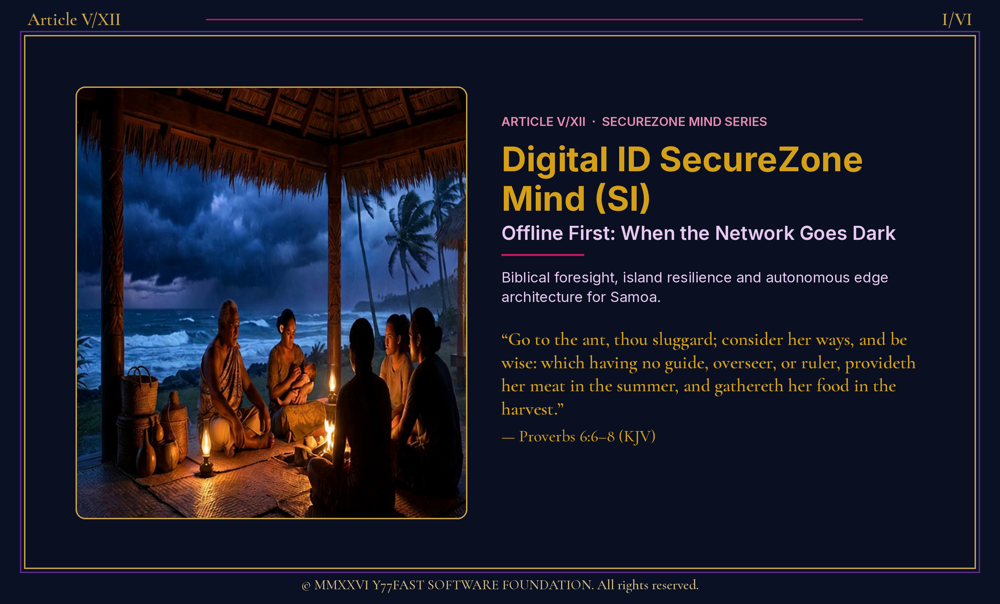
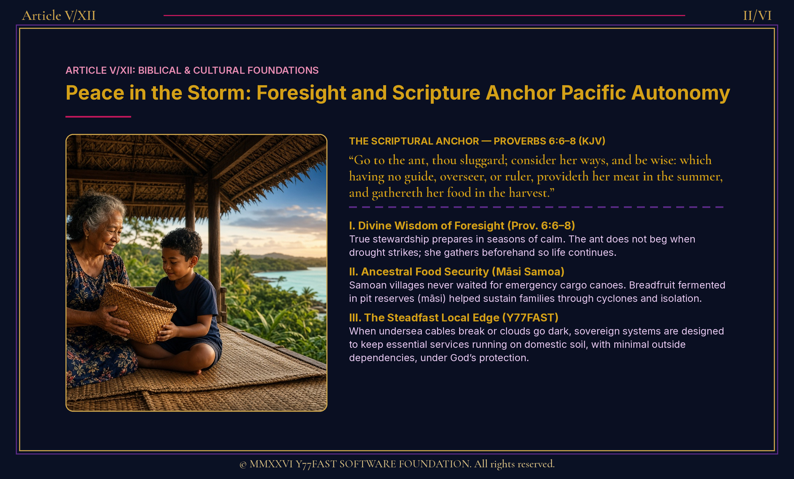
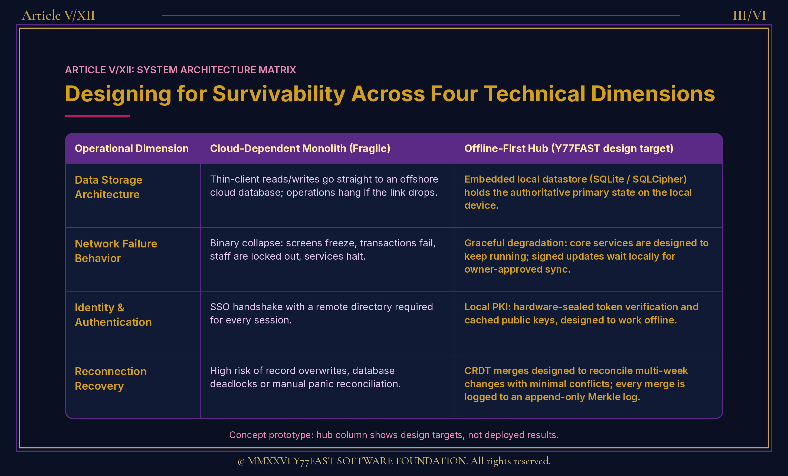
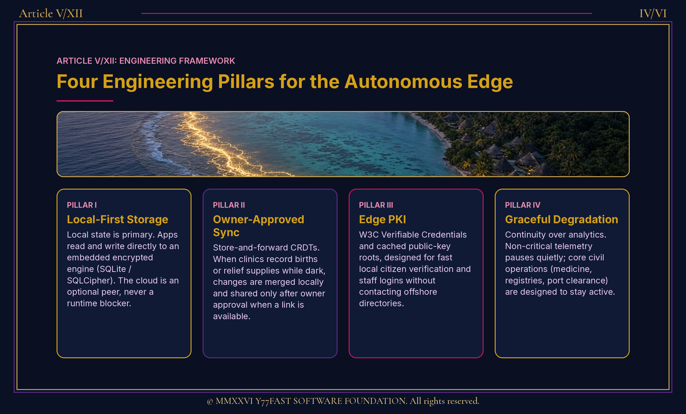
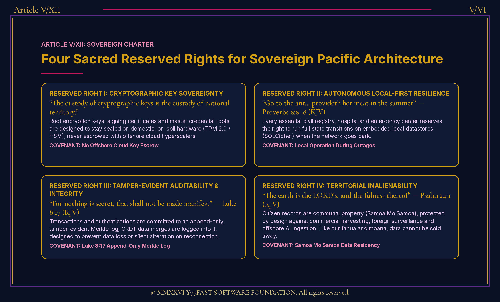
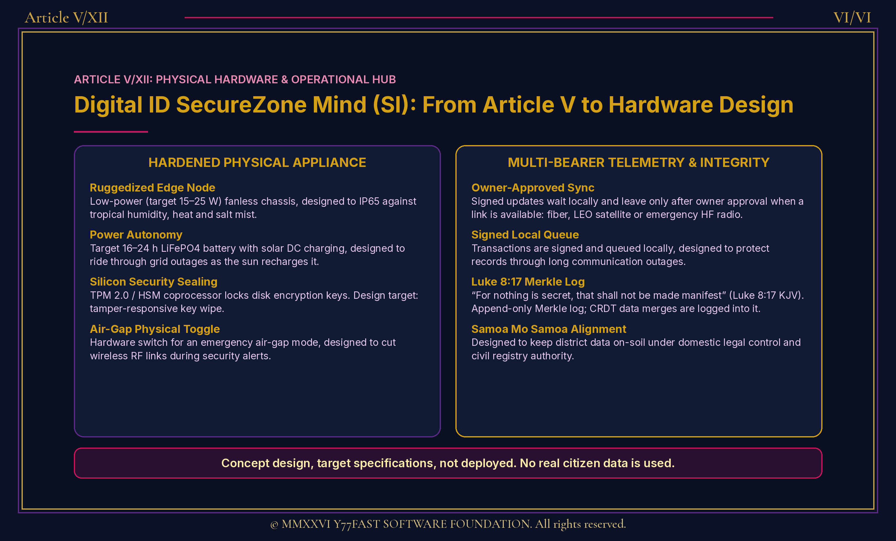

Article V/XII · DIGITAL ID
Digital ID SecureZone Mind (SI)
Offline First: When the Network Goes Dark
“Go to the ant, thou sluggard; consider her ways, and be wise: which having no guide, overseer, or ruler, provideth her meat in the summer, and gathereth her food in the harvest.” — Proverbs 6:6–8 (KJV)
Our villages never waited for the cargo canoe. Breadfruit was stored in pit reserves (māsi) in seasons of calm, so families were cared for through cyclones and isolation. Our Digital ID and vital records deserve the same foresight. When undersea cables break or the cloud goes dark, the services our people rely on should be designed to keep serving them, here on our own soil.
Four engineering pillars (design targets):
- Local-First Storage: local state is primary; the cloud is an optional peer, never a runtime blocker.
- Owner-Approved Sync: changes are merged locally and shared only after owner approval when a link is available.
- Edge PKI: cached public-key roots, designed for fast local verification without contacting offshore directories.
- Graceful Degradation: non-critical telemetry pauses; core civil services are designed to stay active.
The Sovereign Charter: keys stay on domestic hardware, essential services can run locally during outages, every change is recorded in an append-only Merkle log (“For nothing is secret, that shall not be made manifest” — Luke 8:17, KJV), and our data, like our fanua and moana, cannot be sold away. “The earth is the LORD’s, and the fulness thereof” — Psalm 24:1 (KJV).
The hardware concept: a low-power, weather-sealed edge appliance with battery and solar charging, a tamper-responsive key wipe as a design target, and an air-gap switch. Signed updates wait locally and leave only after owner approval when a link is available. That is tautua: technology that serves people and answers to them.
Slides I/VI–VI/VI: download the PDF






Concept design, target specifications, not deployed. No real citizen data is used. Data Hub: concept prototype with fictional data, not government-approved.
Contact: y77@favorhumanity.org
Favor Figota Taueva · Founder / CEO
Y77FAST SOFTWARE FOUNDATION
SECURE · SPEED · TRUST